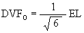
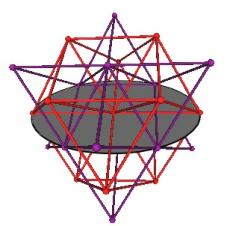
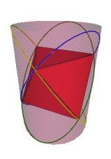

There is another way for the vertices of the original sized Jitterbug to traverse the sub-Octahedron zone portion of the ellipse. With this alternative method the triangles do not change scale and they continue to move radially inward. This can be accomplished by allowing the triangles to interpenetrate one another. See Figure #24. Note that the triangles’ vertices are still paired. That is, the triangles are still joined together.
As Figure #24 shows, the same sequence of polyhedra (Dodecahedron, Icosahedron, VE) occur as in the previous case.
When the vertices are in the VE position, the 8 Jitterbug triangles all have their face centers at the coordinate origin (0, 0, 0).
For the vertices of the Jitterbug to traverse the sub-Octahedron zone (starting from the “closed” Octahedron position), the triangles rotate an additional 30 degrees (about the V-axis) to the sub-VE position and another 30 degrees from the sub-VE to the second original Octahedron position. From the Octahedron to sub-VE position, the triangles move radially inward a distance of

which places all 8 triangles of the Jitterbug at the coordinate origin (0,0,0). From the sub-VE position to the second original Octahedron position, the triangles have passed through the coordinate origin and have moved outward a distance of DVFO.
Note that these rotations are half that of the original Jitterbug motion (the non-sub-Octahedron zone motions) but that the total radial displacement from the original Octahedron to sub-VE position is the same as the total radial displacement from the original Octahedron to the original VE position.
Figure #24 Triangles are allowed to interpenetrate
We now develop equations for the vertex motion along the sub-Octahedron zone.
Figure 25 Orientation of ellipse and axes
We have already developed the equation for the distance along the V-axis to the location of the Jitterbug triangles.
| (3) |

|
where, for this case the angular range is 60° £ g £ 120° with the Octahedron position occurring at g = 60°, the sub-VE position occurring at g = 90° and the second Octahedron position occurring at g = 120° (If the triangle were rotating in the opposite direction then the angular range would be - 60° £ g £ - 120°.)
Now, the angular positions of the Dodecahedron and the Icosahedron for the sub-Octahedron zone can be calculated as follows.
Consider the Dodecahedron in Figure #26. We see that the rotation angle q DSO in the YZ-plane of the ellipse radius to the Dodecahedron position in the sub-Octahedron zone is
q DSO = 90° - q D
Figure #26 Angle for sub-Octahedron zone Dodecahedron position
From the original Jitterbug motion calculations, we know that
so
and
which means
cos( q DSO ) = cos(90° - q D) = cos(90°)cos( q D ) + sin(90°)sin( q D)
cos( q DSO ) = sin( q D)
Therefore
Then, using the equation derived previously,

we get
cos( g DSO) = 1/4
which means that
g DSO = arccos(1/4) @ 75.52248781…deg;
This is the angular amount the triangle is rotated about the V-axis to be positioned into the first sub-Dodecahedron position along the sub-Octahedron zone of the ellipse.
For the Icosahedron position, we know that

which means that
Then with
cos( q ISO) = cos(90° - q I) = sin( q I)
we have

Using

we get


This is the angular amount that the Jitterbug triangle is rotated about the V-axis to position the triangle’s vertex at the first Icosahedron position along the sub-Octahedron zone of the ellipse.
As with the previous case for the vertices traversing the sub-Octahedron zone of the ellipse, the Jitterbug (and polyhedra) is scaled. The scale factors are the same as previously calculated for the previous case. However, in this case in which the triangles interpenetrate each other as the vertices traverse this portion of the ellipse, the scale of the triangles do not change.
The Jitterbug ellipse is such that it passes through 6 vertices of the combined odd-even FCC lattices.

Figure 27 Ellipse in odd-even FCC combined lattice
In Figure #27, the red is the even (vertex centered) FCC lattice and the purple is the odd (Octahedron centered) FCC lattice.
Two Jitterbugs can not share the same triangular face and have their positions (location of center of volume) fixed as they go through the Jitterbug motion. If two Jitterbugs are to share the same triangle face then as the joined Jitterbugs jitterbug, the positions of the Jitterbugs must move.
As Fuller points out, when in the Octahedron position, it is possible to “twist” the Jitterbug to make it collapse and lay flat. It can then be folded into a Tetrahedron.
There are many Jitterbugs, of various sizes, in the 120 Polyhedron. The planes of the initial 5 Jitterbugs of the 120 Polyhedron align with the planes of the great circles of polyhedra rotational symmetries which define the 120 spherical triangles on a sphere.

Figure 28 Five Jitterbugs’ ellipse sets in the planes of 15 Great Circles to define a 120 Polyhedron like structure
One way to look at an ellipses on the surface of the surrounding cylinder is to recognize that the equation

is simply a cosine wave wrapped around the cylinder. There are 3 such cosine waves wrapped onto the surface of a Jitterbug cylinder corresponding to the 3 vertices of a Jitterbug triangle.

Figure #29 Three Jitterbug ellipses on a cylinder
The vertices of the Jitterbug triangles move on elliptical paths.
There are 6 ellipses per Jitterbug. These 6 ellipses define 3 planes, 2 ellipses per plane. The planes intersect each other at 90 degrees. The 2 ellipses per plane intersect each other at 90 degrees.
For the “normal” Jitterbug motion, based on physical, rigid mechanical models, the vertices of the Jitterbug do not travel along the complete elliptical path.
The equation for the Jitterbug ellipse is
The parametric form of the equation for the ellipse is given by

with 0° £ q £ 360° is the angle of rotation of the ellipse “radius” about the X-axis.
The semimajor axis is (EL = the edge length of the Jitterbug)
a = EL
The semiminor axes is
.
The eccentricity of the ellipse is
.
The coordinates for the 2 focus points in the (Y, Z) plane are

The equations used to convert a rotation of the ellipse radius by the angle q amount about the X-axis to the corresponding rotation of the triangle by the angle g amount about the V-axis and visa versa are

For the “normal” Jitterbug motion, - 60° £ g £ 60° with g = - 60° being the first Octahedron position, g = 0° being the VE position, and g = 60° being the second Octahedron position. The corresponding YZ-plane rotation angles of the ellipse radius is - 45° £ q £ 45°.
The radial position of the Jitterbug triangle with respect to its rotation about the V-axis is given by

As the Jitterbug moves from the VE position to the Octahedron position, the vertices pass through first an Icosahedron position and then a regular Dodecahedron position.
The angular amount that a Jitterbug triangle is rotated (in either direction) from the VE position to the Icosahedron position:


The angular amount that the Jitterbug triangle is rotated (in either direction) from the VE position to the Dodecahedron position:


By removing the constraint of fixed sized, impenetrable triangles, the vertices of the Jitterbug can be made to travel along the “sub-Octahedron Zone” portion of the ellipse. There are then 2 different ways that the vertices can traverse this part of the ellipse
1) By allowing the scale of the Jitterbug triangles to change, but still not allowing the triangles to interpenetrate each other,
2) By allowing the Jitterbug triangles to interpenetrate each other without changing the size (scale) of the triangles.
CASE 1:
For this case, the radial distance of the triangles is given by the equation

with - 60° £ g £ 60°.
The Jitterbug triangles are scaled by the Scale Factor

For the VE position ( g = 0°)

For the Dodecahedron position ( g = g D above)
For the Icosahedron position ( g = g I above)
SFI = 1 / t @ 0.618033988….
CASE 2:
For this case, the Jitterbug triangles interpenetrate but do not change scale. However, the corresponding polyhedra do change scale as in case 1 above.
The radial position of the triangles is given by
where 60° £ g £ 120° with the Octahedron position occurring at g = 60°, the sub-VE position occurring at g = 90° and the second Octahedron position occurring at g = 120° . (If the triangle were rotating in the opposite direction then the angular range would be - 60° £ g £ - 120°.)
The Icosahedron position is at
The sub-Dodecahedron position is at
g DSO = arccos(1/4) @ 75.52248781…°

The sub-VE position occurs at the angle
gVESO = 90°
q VESO = 90°
Fuller, R. Buckminster, Synergetics, MacMillan Publishing Company, 1982
The folowing references were not used for writing of this paper. They were discovered only after I had done my own calculations and illustrations for this paper.
Angell, I. O. and Moore, M. "Symmetrical Intersections of Cylinders." Acta Cryst. Sect. A 43, 244-250, 1987.
Moore, M. "Symmetrical Intersections of Right Circular Cylinders." Math. Gaz. 58, 181-185, 1974.